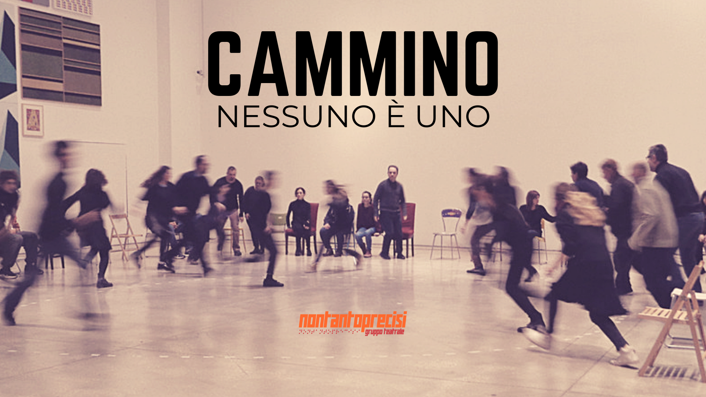
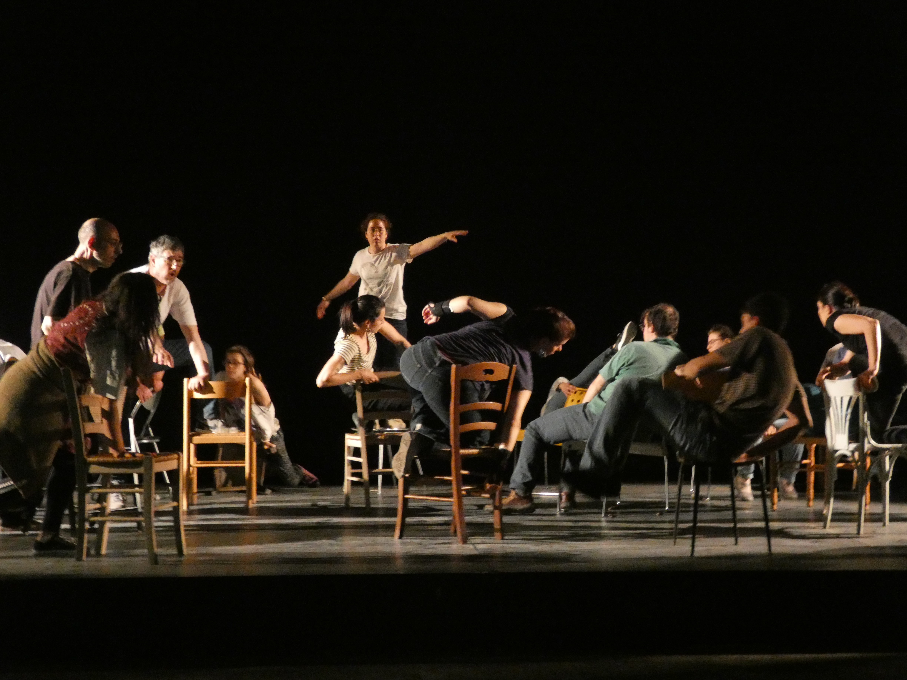
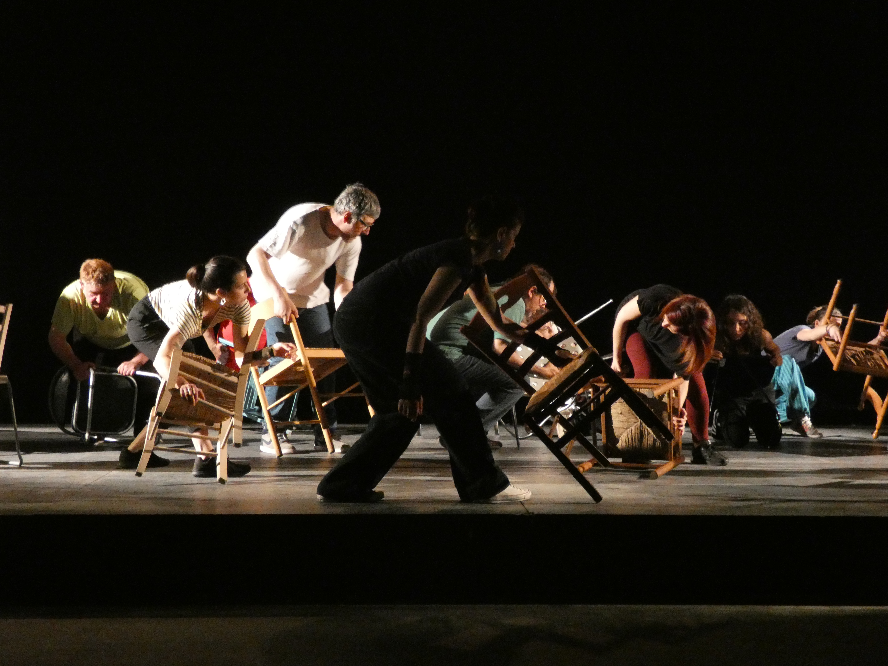
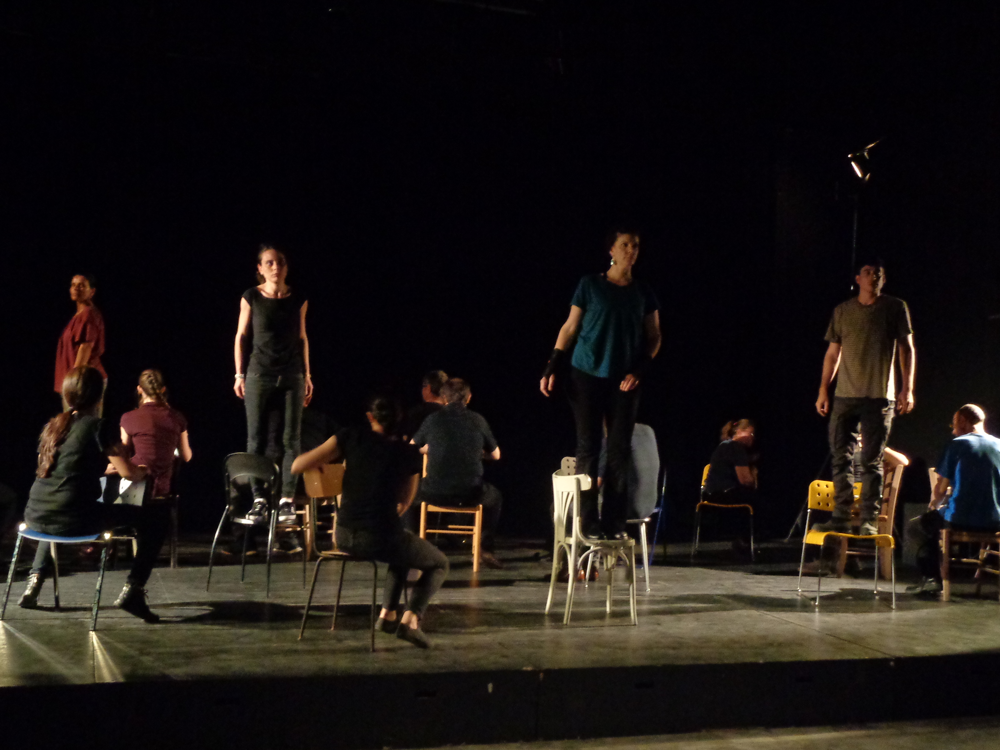
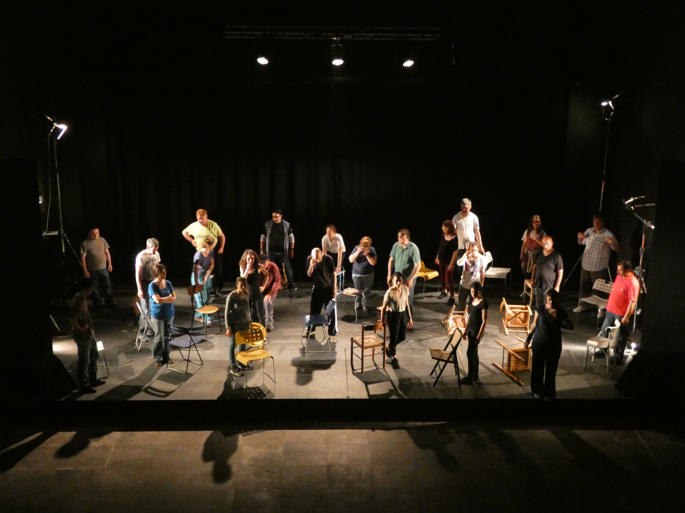
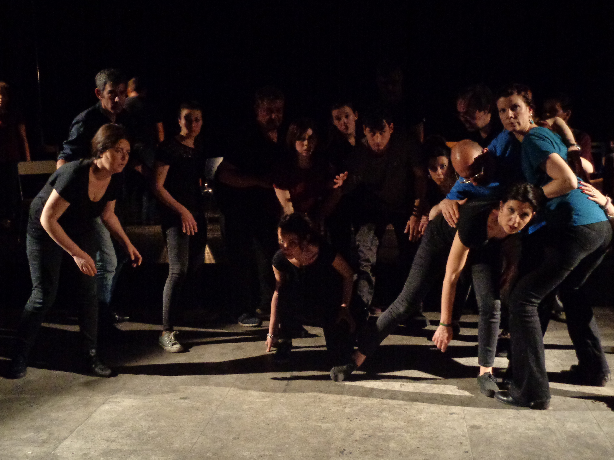
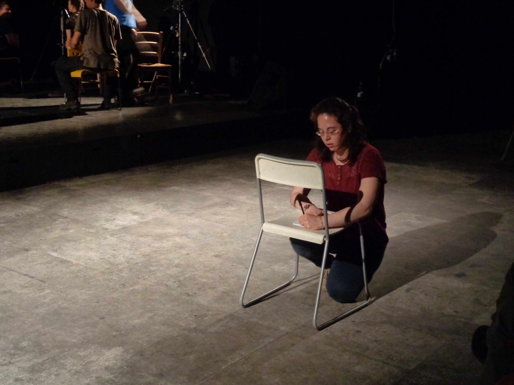

Sinossi
Il movimento è sempre una trasformazione del proprio stato corporeo, cambiamento della relazione col mondo che manifesta la concreta materia del nostro vivere. Fuori dalla determinazione meccanica del tempo e dello spazio, noi e le cose che ci stanno intorno e dentro siamo presi nel gioco inarrestabile che, come in un caleidoscopio, disegna la natura comune delle nostre vite col precario equilibrio tra quello che è stabile e quello che non lo è, tra ciò che è mutevole e ciò che permane, tra esitare e quindi restare o darsi nell’azione e allora andare, partire.
Il movimento ci coglie tra l’immagine nostra nel mondo e il riflesso del mondo in ciascuno di noi. Nulla è nascosto o occultabile, ogni cosa traspare e appare al giorno della nostra esistenza, nello specchio di occhi innumerevoli che moltiplica e dà alla visione. Figure tra un arrivo e una partenza, non siamo mai per la prima volta. Presenti nel farsi e disfarsi continuo delle forme che il tempo possiede, diamo al corpo il cammino che solleva dal passo che è stato per posare su quello che ancora non è.
Nessuno è uguale, mutare le distanze e le prossimità, volgere lo sguardo a piani di profondità differente, incrociare linee con linee, angoli e direzioni, affiancare e confrontare, nell’uno manifesta l’altro, nell’antico il nuovo, nell’immobilità apparente la trasformazione. Nessuno è uno. Lontano da quanto sembrava appartenerci e che ora ci fa stranieri, quello che non si conosce avvicina, ci fa numerosi e diversi. Scambiare terra con terra, parola con parola è la ragione per andare. Una persona in cammino è una moltitudine in movimento.






Crediti foto: XXXX
← Torna a SPETTACOLI